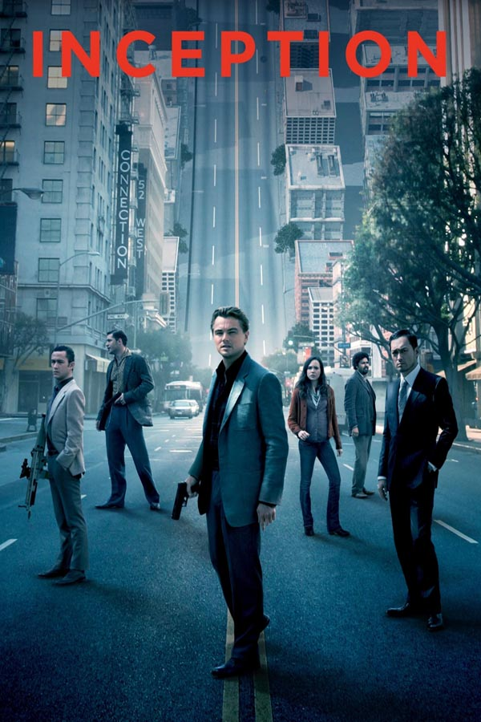

|  |
Tür
Aksiyon,Bilim Kurgu,Macera
Özet
Dom Cobb (Leonardo DiCaprio) çok yetenekli bir hırsızdır. Uzmanlık alanı, zihnin en savunmasız olduğu rüya görme anında, bilinçaltının derinliklerindeki değerli sırları çekip çıkarmak ve onları çalmaktır. Cobb’un bu ender mahareti, onu kurumsal casusluğun tehlikeli yeni dünyasında aranan bir oyuncu yapmıştır. Ancak, aynı zamanda bu durum onu uluslararası bir kaçak yapmış ve sevdiği herşeye malolmuştur. Cobb’a içinde bulunduğu durumdan kurtulmasını sağlayacak bir fırsat sunulur. Ona hayatını geri verebilecek son bir iş; tabi eğer imkansız başlangıçı tamamlayabilirse... Mükemmel soygun yerine, Cobb ve takımındaki profesyoneller bu sefer tam tersini yapmak zorundadır; görevleri bir fikri çalmak değil onu yerleştirmektir. Eğer başarırlarsa, mükemmel suç bu olacaktır. Ama ne dikkatle yapılan planlamalar, ne de uzmanlıkları, onları, her hareketlerini önceden tahmin ettiği anlaşılan tehlikeli düşmanlarına karşı hazırlıklı kılabilir. Bu, gelişini sadece Cobb’un görebildiği bir düşmandır.
Yapımcı: Christopher Nolan , Emma Thomas , Jordan Goldberg , Zakaria Alaoui
|